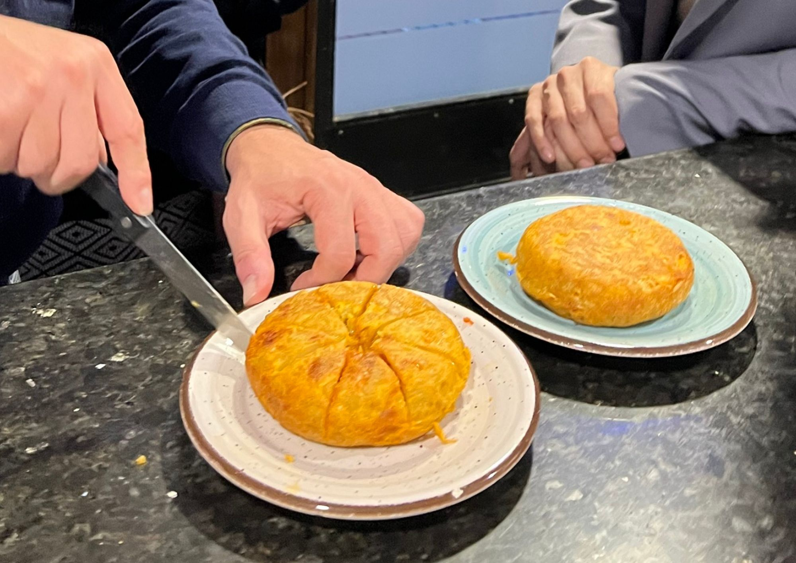

La hostelería de Fuenlabrada se erige como protagonista con una nueva edición de la Feria de la Tortilla, una ruta gastronómica en la que 62 bares y restaurantes del municipio compiten por elaborar la mejor tortilla de la ciudad. La iniciativa, que se celebra entre el 5 y el 8 de marzo, busca impulsar el comercio local y dinamizar la actividad de los establecimientos hosteleros del municipio.
Los locales participantes ofrecen un pincho de tortilla por 2,50 euros, además de la posibilidad de degustar otras propuestas elaboradas con huevo o patata, ingredientes protagonistas de esta cita culinaria. Los clientes podrán votar su tortilla favorita a través votación digital, donde los fuenlabreños podrán votar por su pincho favorito y reconocer así a los establecimientos más destacados de cada junta de distrito.

Javier Bokesa, el concejal de Comercio, ha subrayado el éxito de esta iniciativa, cuyo objetivo es visibilizar la oferta gastronómica de la ciudad. El edil señala que la Feria es una forma de "dar a conocer la oferta gastronómica que ofrecen los establecimientos de la localidad" y que no hay mejor manera de hacerlo que centrándola en "algo tan tradicional y vinculado a Fuenlabrada como es la tortilla de patata" añadía.
La feria forma parte del programa municipal Degusta Fuenlabrada, impulsado por el Ayuntamiento junto con la Asociación de Hosteleros para promover el consumo en los establecimientos de la ciudad y reforzar el comercio de proximidad. Además de elegir la mejor tortilla, las personas que participen en la votación entrarán en el sorteo de cinco comidas o cenas valoradas en 50 euros en los locales adheridos a la campaña.
La iniciativa se celebra en torno al Día de la Tortilla o Santa Juana, una tradición muy arraigada en Fuenlabrada que se conmemora el 9 de marzo y que cada año reúne a miles de vecinos en parques y espacios públicos para compartir comida y celebrar esta jornada festiva. Asimismo, el Ayuntamiento había previsto además una serie de actividades -castillos hinchables, conciertos musicales y una tortilla gigante- en el recinto ferial para celebrar el Día de la Tortilla este sábado 7 de marzo. Sin embargo la previsión de lluvias ha hecho que las actividades se pospongan a una fecha aún sin anunciar.
Una cita gastronómica consolidada
La Feria de la Tortilla es la cita gastronómica por excelencia de Fuenlabrada. Esta festividad tan popular del calendario local es una herramienta clave para impulsar la hostelería y el pequeño comercio de los distritos. En la edición de 2025 participaron un total de 66 establecimientos. Ese mismo año, el Asador El Dorado Lixto fue elegido como ganador del premio a la mejor tortilla de Fuenlabrada gracias a su propuesta de tortilla trufada, seleccionada mediante votación popular entre los clientes que participaron en la ruta culinaria.
Bokesa reconocía en 2025 que ese año se había incrementado el número de los locales participantes, y eso posiciona a la Feria como una oportunidad para "reactivar la economía del municipio y dar a conocer la oferta gastronómica de la ciudad". De acuerdo con datos del Ayuntamiento de Fuenlabrada, en la edición anterior más de 1.500 personas se registraron para votar y se contabilizaron cerca de 2.800 votos, lo que demuestra la implicación de vecinos y visitantes en una propuesta que combina gastronomía, tradición y promoción del comercio local.